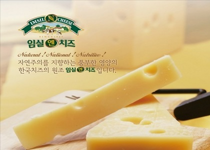
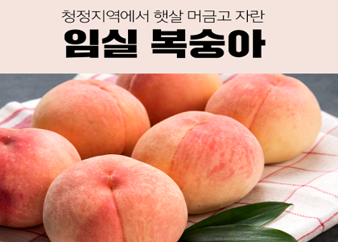
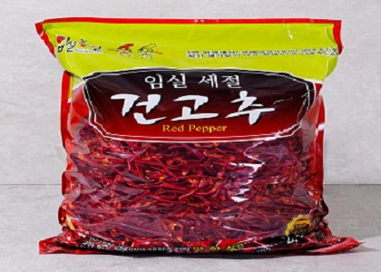

-

대표적인 한국산 치즈로, 전라북도 임실군을 원산지로 하고 있다.
한국인에게 임실군이라 하면 치즈를 떠올리게 될 정도로 유명하다.
덕분에 임실군의 치즈 산업은 그 규모에서 한국 제일로 성장했으며, 공정 역시 선진국 수준으로 첨단을 달리고 있다.
1970년 저장 기간이 짧고 보관이 힘든 카망베르 치즈 대신 체다 치즈를 생산하기 시작했고, 이렇게 만든 체다 치즈가 조선호텔에서 좋은 평가를 받아 대량 납품 계약을 맺으면서 임실치즈가 본격적으로 생산되게 되었다.
-

일교차가 큰 임실의 청정지역에서 생산하는 복숭아는 당도가 높고 살이 연하며 과즙이 많아 여름철 몸에 좋은 과일이다.
주로 생산하는 품종은 황도이며 8월말에서 9월중에 출하된다.
말하는 선별기 도입으로 과수상태를 항상 특 상품을 유지하고 있다. 특히, 복숭아는 딸 때부터 취급에 주의해야 한다.
비타민 A와 C가 무척 많이 들어있고 펙틴질이 풍부한 알칼리성 식품이며 단맛이 강하나 당분은 10% 정도이다.
복숭아 등 과실은 당분, 유기산, 비타민, 섬유소, 무기질 등 인체 영양상 요구되는 영양소가 골고루 함유되어 하나의 종합영양제라 할 수 있다.
-

해발 250 ~ 300m 중산간지로 주·야간 온도차가 8 ~10℃로 높은 품질의 고추 생산의 적지이다 토양이 약산성이고 보수력 및 보비력이 좋고 배수가 잘되어 고추생육의 가장 좋은 토양이다.
일조 시간이 타 지역보다 80여 시간 많아 탄수화물 등 저장 양분이 많다.
고추의 담백한 맛을 지니고 음식물과 어우러짐이 좋아 맛을 좋게 하고, 중산간지 특성상 밤낮의 기온차가 커 과피가 두꺼워 가루가 많이 나며 과표면이 매끄러워 윤택이 나고, 고추 고유의 향과 우리 인체가 가장 적당하게 느끼는 매운 캡사이신 함량이 0.95mg/100g에 가장 가까운 0.94mg/100g으로 매운 맛이 적당하며 선홍색이 난다.